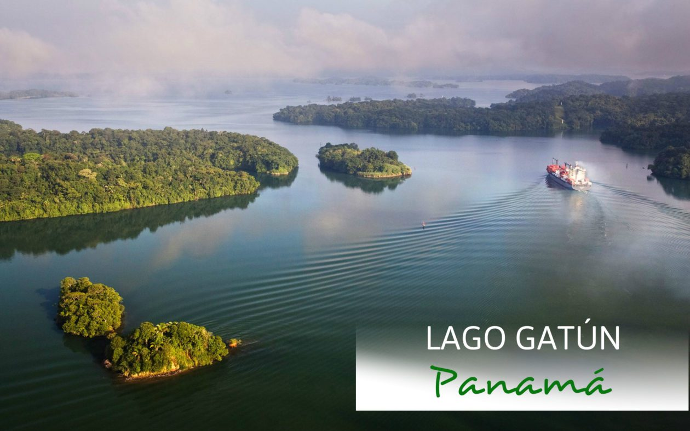

Lago Gatún: El corazón de agua dulce del Canal de Panamá
El Lago Gatún es un impresionante lago artificial situado en la República de Panamá, famoso a nivel mundial por ser una parte fundamental de la ruta de tránsito del Canal de Panamá, encargada de abastecer el agua necesaria para el funcionamiento de las esclusas.
Es un destino natural de clase mundial que destaca por su densa selva tropical circundante, su exuberante biodiversidad y por ofrecer la increíble experiencia de navegar junto a colosales buques Panamax.
Tiempo de estadía recomendado: 1 días.
Sitios para visitar
- La Isla de los Monos
- Isla Barro Colorado (Instituto Smithsonian)
- Centro de Visitantes de Agua Clara
Lista de precios de Tours Comunes (USD)
- Tour en bote estándar (por persona): $50.00
- Menores (8 a 12 años): $50.00
- Niños menores de 7 años: GRATIS
- Excursión Kayak de medio día: $40.00
Imagen representativa

Video del destino
Puedes ver un recorrido virtual en el siguiente video externo: